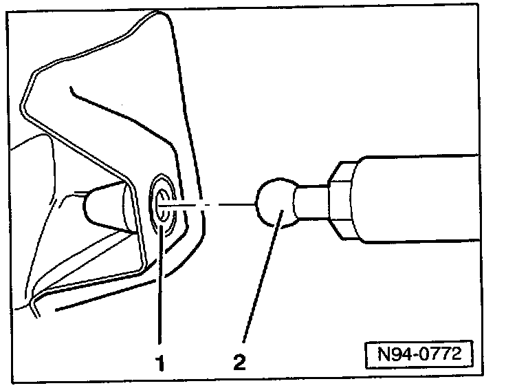

Lighting - Tail Lamp Difficult to Remove/Lens Cracks
Group: 94Number: 05-01
Date: Feb. 3, 2005
Subject:
Tail Light Assembly, Difficult to Remove or Lens Cracks During Removal
Model(s):
Touareg 2004, 2005
Condition
Tail light assembly is hard to remove or lens cracks during removal.
May be due to excessive retention force of the tail light retainer installed in the body.
Production
Improved retainer Part Number 7L6 905 229 installed beginning with VIN 7L_5D053137.
Service
After removal of tail light assembly for service (i.e. removal due to damage or installation of a trailer hitch).

- Replace existing retainer -1- (white) with new improved retainer Part No: 7L6 905 229 (black).
- Reinstall Tail light assembly.
Tip:
Part numbers listed in this bulletin are for reference only. Always check with your Parts Dept. for the latest parts information.
Perform this procedure only if tail light must be removed during a needed repair (i.e. due to damage or installation of a trailer hitch).